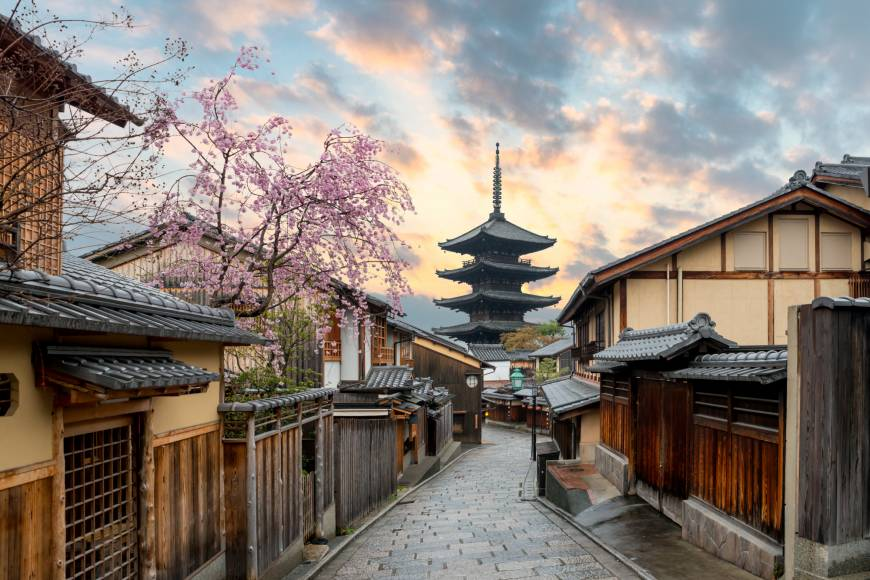
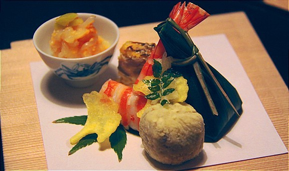

When you close your eyes and think of Japan,
you’re probably picturing Kyoto:
sublime Zen gardens, mysterious Buddhist temples,
colorful Shinto shrines, graceful geisha.
The fact is, Kyoto is the most rewarding city in Japan
and a place all travelers should visit
at least once in their lives.
 Kyoto is Japan in a nutshell. It’s the cultural and historical heart of the country. It’s the best place in all Japan to experience traditional temples, shrines, gardens, geisha, shops, restaurants and festivals. In short, Kyoto is the most rewarding destination in all of Japan and it should be at the top of any Japan travel itinerary. Indeed, I may be biased, but I’d go so far as to say that Kyoto is the most rewarding single city in all of Asia.

Kyoto is famous for its historical landmarks with over
2,000 shrines and temples to enjoy and explore.
It also has a rich and diverse food culture and culinary
history with several well known dining styles,
local delicacies and traditional sweets.
Kyoto is famous for its tofu,
its sublime kaiseki cuisine and its
Buddhist vegetarian fare. It’s also a
great place to sample all the main classics
of Japanese cuisine.
Ugnė Mickutė